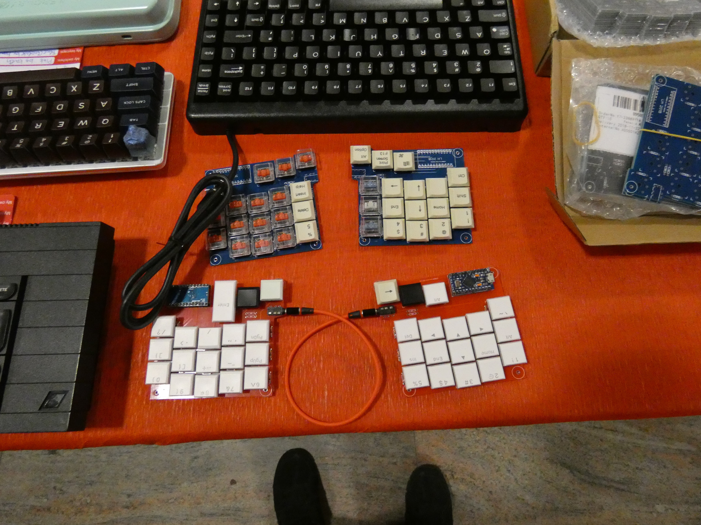
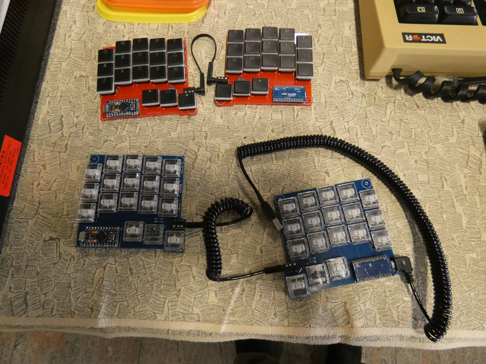
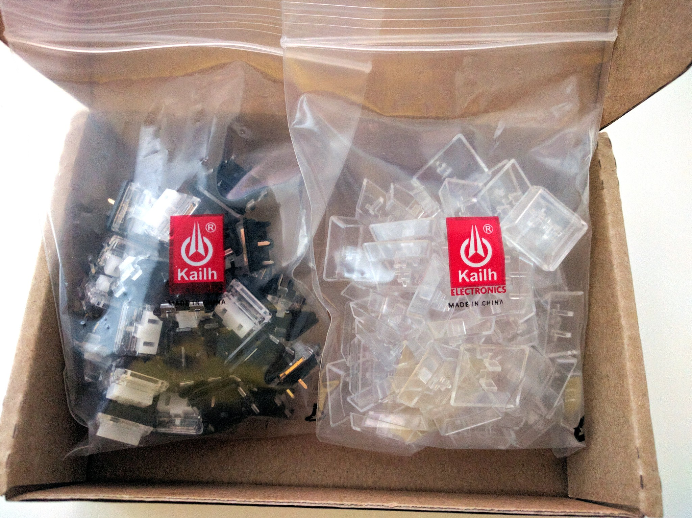

The Swiss Mechanical Keyboard Enthusiasts Meetup¶
Published on 2019-10-04 in 5plit Keyboard Clone.
It all started on a Sunday, when I brought my Alpen Clack and Steno Keyboard projects to the sixth keyboard pervs meetup. I had my eyes on the low- profile Kailh switches since a while, but their official website only lets you order a bag of 800 pieces at the minimum, and I didn’t have the energy to go out and organize a group buy. I even brought my KB390L keyboard that uses those switches, that is my favorite keyboard since two years, and that I use daily. But I saw very few keyboards using those switches, except for this:
and this:
I loved the minimalist approach to those keyboards ( called 5plit ), the chocolate switches they use, and the fact that they use the same PCB for both halves, just flipped over. And the PCB fits in 10x10cm, so it’s cheap to manufacture.
I met the author of this keyboard, and learned that he uses it for his everyday keyboarding needs, even though it started as just a silly experiment. Sounds really great. I asked if he could sell any spare PCBs, and he did, so now I have a pair of them. He also told me about the Aliexpress shop that Kailh has , where you can buy those and other switches in any quantity you want. Also key caps and everything else. So I made the order the same day, for 40 switches and as many transparent key caps, to bring this keyboard to life.
Today the switches and key caps arrived. I still have the diodes, the jack sockets and cable, and one of the pro micros (I ran out) on order, so it probably won’t be ready until next month (I go on vacation too).
